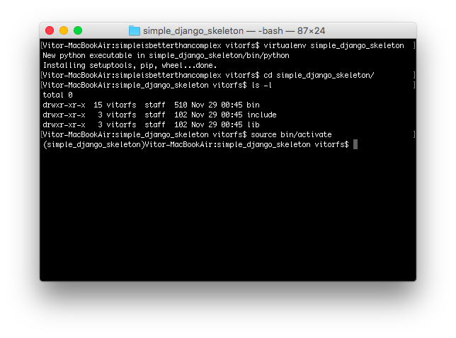

(Picture:
(Picture: In this article you will find some useful tips regarding starting a new Django project and preparing a development environment. The steps below describes what I generally do when I’m starting a new project.
Step 1: Python Virtual Environment
If you have to maintain more than one Django project, at some point you will end up having problems with its dependencies, or with the Django version itself. The solution is to use virtualenv, which is a tool to create isolated Python environments.
It’s great because each of your Django project can live inside its own Python environment.
If you don’t have it yet, you can install it using pip:
$ pip install virtualenvThe basic usage of virtualenv would be, inside the folder you want to place your project, execute the following command:
$ virtualenv simple_django_skeletonThe instruction above will create a Python environment named simple_django_skeleton. In the end of the day, it’s just a folder with a Python installation inside. We will place our Django project folder and all its dependencies inside this folder.
Now, inside the simple_django_skeleton folder, activate the environment:
$ source bin/activateYou will notice that the name of the active virtualenv will now appear on the left of the prompt. Your terminal should look like something like this:

Step 2: Git Remote Repository
Using a version control system is a clever idea, even if you are gonna be working alone. I use Git as the version control system for the projects I develop, and GitHub as the remote storage.
I prefer to create the remote repository first on GitHub, and then clone it into my development environment. It’s cleaner this way.
Inside the simple_django_skeleton folder, clone your recently created repository:
git clone git@github.com:sibtc/simple-django-skeleton.gitYour folder structure should look like this:
simple_django_skeleton/
|∙∙bin/
|∙∙include/
|∙∙lib/
|∙∙simple-django-skeleton/Step 3: Install Django
With your virtualenv activated, install Django using pip:
pip install djangoStep 4: Initialize the Project
Inside the simple-django-skeleton folder, which is the git repository, initialize the Django project:
django-admin startproject simple_skeleton .Notice the dot in the end of the startproject command. It will start the project in the current folder.
simple_django_skeleton/
|∙∙bin/
|∙∙include/
|∙∙lib/
+∙∙simple-django-skeleton/
|∙∙LICENSE
|∙∙README
|∙∙manage.py
+∙∙simple_skeleton/
|∙∙__init__.py
|∙∙settings.py
|∙∙urls.py
|∙∙wsgi.pyStep 5: Install python-decouple, Unipath and dj-database-url
I use those three packages on all my Django projects. Python Decouple is a package to separe configuration variables from the source code (in case you missed our last week article about Python Decouple, you can read it here). Unipath will help you writing relative paths. Finally, dj-database-url will give you a cleaner way to write your database url.
pip install python-decouple
pip install Unipath
pip install dj-database-urlStep 6: Create a requirements.txt file
It’s important to keep track of your project’s requirements. Specially if you are gonna make it available for the public:
pip freeze > requirements.txtStep 7: Add basic settings
First, remove the os import and the BASE_DIR definition and add the following imports:
from decouple import config
from unipath import Path
import dj_database_urlDefine the PROJECT_DIR:
PROJECT_DIR = Path(__file__).parentDefine the static and media stuff, so Django won’t have problems finding your css/js files:
STATIC_ROOT = PROJECT_DIR.parent.parent.child('static')
STATIC_URL = '/static/'
STATICFILES_DIRS = (
PROJECT_DIR.child('static'),
)
MEDIA_ROOT = PROJECT_DIR.parent.parent.child('media')
MEDIA_URL = '/media/'Define template folder, so Django will render your templates correctly:
TEMPLATES = [
{
'BACKEND': 'django.template.backends.django.DjangoTemplates',
'DIRS': [ PROJECT_DIR.child('templates') ],
'APP_DIRS': True,
'OPTIONS': {
'context_processors': [
'django.template.context_processors.debug',
'django.template.context_processors.request',
'django.contrib.auth.context_processors.auth',
'django.contrib.messages.context_processors.messages',
],
},
},
]Decouple your settings params so you don’t commit any sensitive data or environment-specific param:
SECRET_KEY = config('SECRET_KEY')
DEBUG = config('DEBUG', default=False, cast=bool)
DATABASES = {
'default': dj_database_url.config(
default = config('DATABASE_URL')
)
}Create a .env file in the project root:
DEBUG=True
SECRET_KEY=3izb^ryglj(bvrjb2_y1fZvcnbky#358_l6-nn#i8fkug4mmz!
DATABASE_URL=sqlite:////Users/vitorfs/Projects/simple_django_skeleton/db.sqlite3Make a copy of your .env file, name it .env.example and add some sample data. This will help people who will run your project later on, as we will make Git ignore the .env file:
DEBUG=True
SECRET_KEY=s3cr3tk3y
DATABASE_URL=sqlite:////tmp/db.sqlite3Step 8: Create static and template folders
I like to create a folder to place project-wide templates (e.g. base.html) and static files inside the project folder:
simple-django-skeleton/
|∙∙LICENSE
|∙∙README
|∙∙manage.py
+∙∙simple_skeleton/
|∙∙static/
|∙∙css/
|∙∙app.css
|∙∙img/
|∙∙favicon.png
|∙∙js/
|∙∙app.js
|∙∙templates/
|∙∙base.html
|∙∙__init__.py
|∙∙settings.py
|∙∙urls.py
|∙∙wsgi.pyTo get things started I usually create a simple base.html template:
{% load static %}<!doctype html>
<html>
<head>
<meta charset="utf-8">
<title>{% block title %}Simple Skeleton{% endblock %}</title>
<link rel="icon" type="image/png" href="{% static 'img/favicon.png' %}">
<link href="{% static 'css/app.css' %}" rel="stylesheet">
</head>
<body>
{% block content %}
{% endblock %}
<script src="{% static 'js/app.js' %}"></script>
</body>
</html>Step 9: Create a .gitignore file
I use the GitHub’s Python .gitignore. Then I update it with the following:
.DS_Store
*.sqlite3
.envThe .DS_Store is a OSX file that’s automatically created by the OSX file explorer, Finder.
Step 10: Do a initial commit
Now we have a basic setup, we can commit our starting point:
git add .
git commit -m "Initial commit"Step 11: Migrate
Migrate the Django models, in case you will be using django.contrib.auth, django.contrib.contenttypes etc:
python manage.py migrateStep 12: Create first App
If the project’s model is not clear for me in the beginning, I usually create an app called core. If it starts to grow, I refactor the app.
One thing to keep your apps well organized, is to create a folder called apps, then you place all your Django Apps inside it. Also, I like to create my Apps inside the project folder, so it stays in the project’s namespace.
cd simple_skeleton
mkdir apps && cd apps
touch __init__.py
django-admin startapp coreThe __init__.py is required to properly import the apps.
simple-django-skeleton/
|∙∙LICENSE
|∙∙README
|∙∙manage.py
+∙∙simple_skeleton/
|∙∙apps/
|∙∙__init__.py
|∙∙core/
|∙∙__init__.py
|∙∙admin.py
|∙∙migrations/
|∙∙models.py
|∙∙tests.py
|∙∙views.py
|∙∙static/
|∙∙templates/
|∙∙__init__.py
|∙∙settings.py
|∙∙urls.py
|∙∙wsgi.pyAdd it to INSTALLED_APPS:
INSTALLED_APPS = (
'django.contrib.admin',
'django.contrib.auth',
'django.contrib.contenttypes',
'django.contrib.sessions',
'django.contrib.messages',
'django.contrib.staticfiles',
'simple_skeleton.apps.core',
)Edit your project’s urls.py:
from django.conf.urls import include, url
from django.contrib import admin
from simple_skeleton.apps.core import views as core_views
urlpatterns = [
url(r'^$', core_views.home, name='home'),
url(r'^admin/', include(admin.site.urls)),
]Create a template folder inside the app core, and then inside create a folder named core and a file for our homepage home.html:
{% extends 'base.html' %}
{% block content %}
<h1>Hello, World</h1>
{% endblock %}Edit the app core views.py adding our first view:
from django.shortcuts import render
def home(request):
return render(request, 'core/home.html')That’s it! As soon as I reach this point and got everything working fine, I start the development.
If you want to see the source code of this sample project, you can grab the source code on GitHub simple-django-skeleton.
 How to Start a Production-Ready Django Project
How to Start a Production-Ready Django Project
 A Complete Beginner's Guide to Django - Part 7
A Complete Beginner's Guide to Django - Part 7
 A Complete Beginner's Guide to Django - Part 6
A Complete Beginner's Guide to Django - Part 6
 How to Extend Django User Model
How to Extend Django User Model
 How to Setup a SSL Certificate on Nginx for a Django Application
How to Setup a SSL Certificate on Nginx for a Django Application
 How to Deploy a Django Application to Digital Ocean
How to Deploy a Django Application to Digital Ocean